Wir frühstücken ausgiebig und packen und bevor wir starten, können wir noch für Fotos posieren.
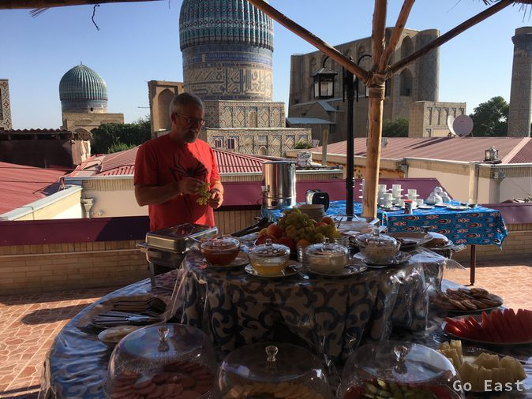
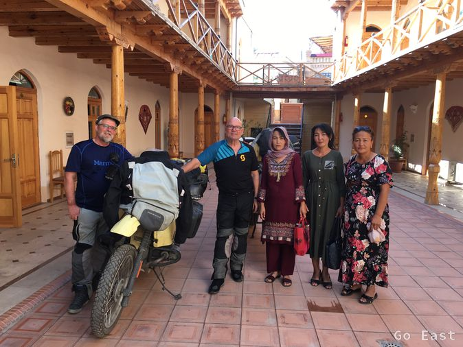
Mein Navi hat vorübergehend eine Störung und zeigt nur Luftlinie an und projiziert die Route nicht auf die Straße. Wir verlieren uns und treffen uns wieder. Das letze usbekische Geld setzen wir in Sprit um und machen uns auf, Richtung Grenze Tadschikistan. Die Ausreise geht schnell und sehr freundlich vonstatten. Die Einreise nach Tadschikistan geht noch schneller. Für die Eintragung der Fahrzeuge werden 2x10,- USD fällig, die in der Brusttasche des Beamten verschwinden.
Die Straßen sind hervorragend und wir sehen seit Tagen erstmal wieder Berge am Horizont und Wolken. Kaum zu fassen.


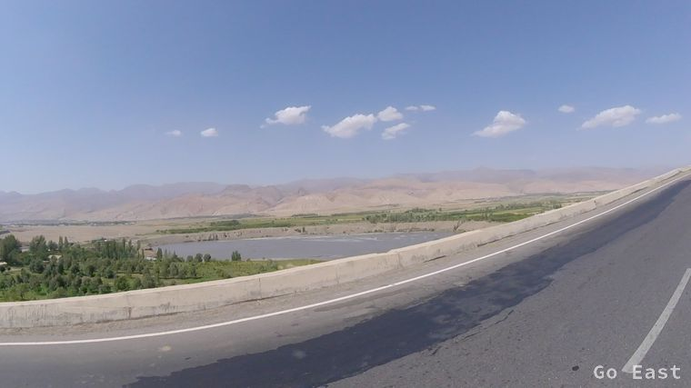
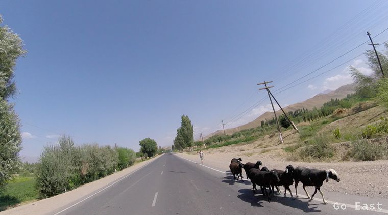
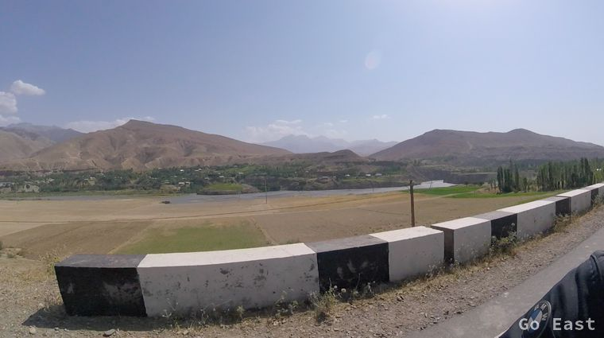
Wir machen Rast und essen eine Kleinigkeit in einem Lokal. Interessant, dass das Lokal auch Separees mit Vorhängen hat. Darin wird auch Alkohol serviert. Anscheinend ist Wodka ein angesagtes Getränk zu jeder Tageszeit. Ein Polizist in Uniform betritt das Lokal, trinkt ein halbes Wasserglas Wodka und geht wieder. Es ist 15:30. Andere Länder, andere Sitten.

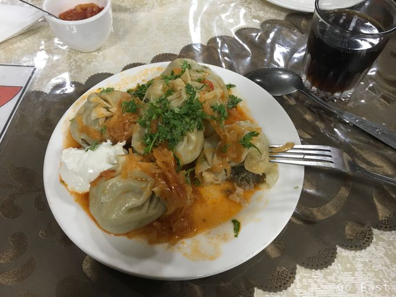
Das Straßenbild hat sich wieder geändert. Auffallend viele Mercedes PKW, Sprinter und Mercedes LKW neueren Baujahrs, sodann Opel und Toyota und natürlich russische Lada und ältere LKW.
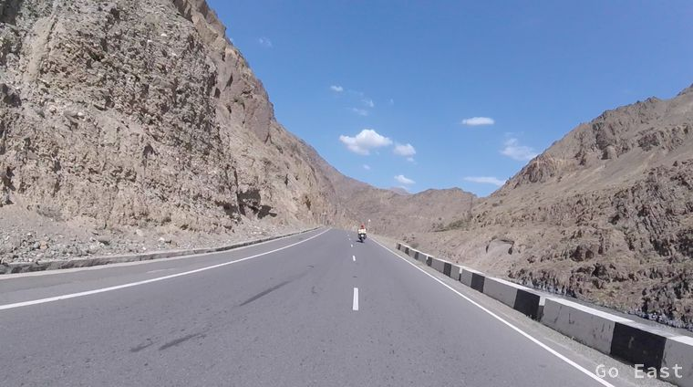

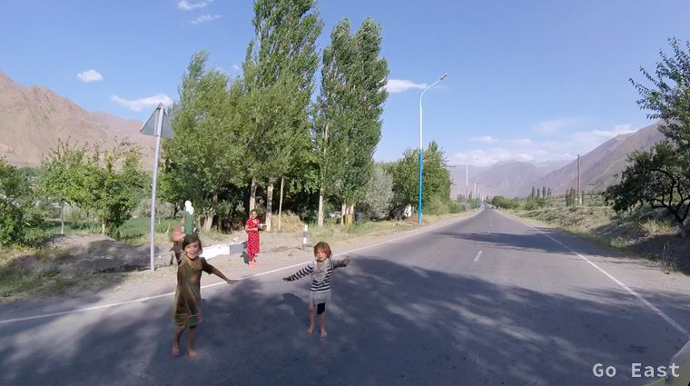
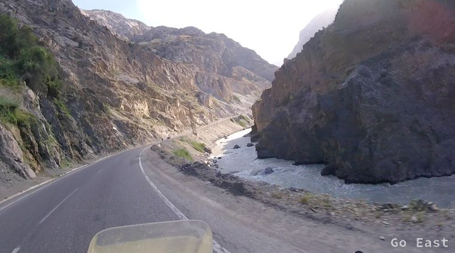
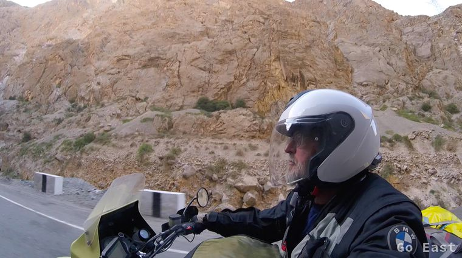
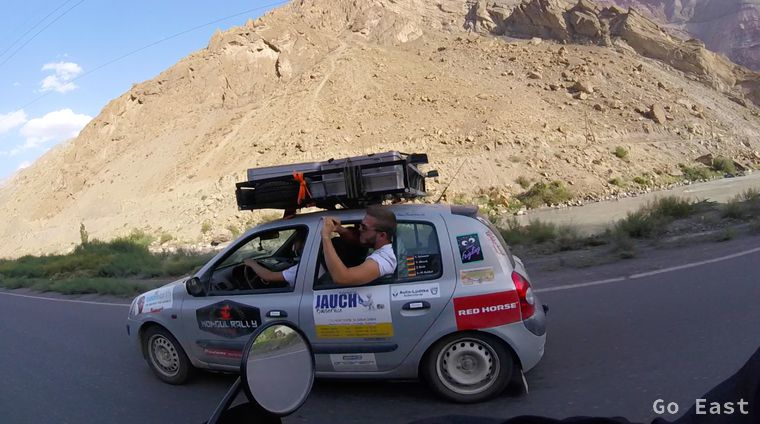
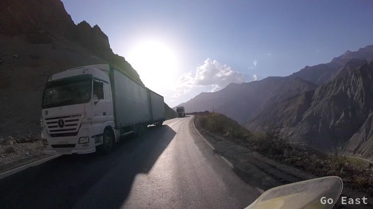

Wir halten an bei Quellen im Gebirge, die genutzt werden, die Getränke zu kühlen. Es wird Imbiss angeboten und getrocknetes Obst. Natürlich kann man sich auch hier vortrefflich über Fussball unterhalten, auch wenn man die Sprache nicht spricht. Namen zu nennen und entsprechende Mienen und Gesten zu machen reicht ja auch schon.

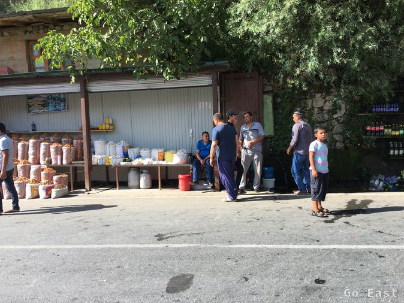


Es wird gebirgig und wir klettern auf über 2.600m hoch, vorbei an zahllosen LKW. Die rauchigsten sind die russischen Kamaz. Es scheint als wenn die Altöl oder Pommes-Fett verheizen. Der Pass besteht aus einem 5km langen, kaum beleuchteten und unbelüfteten Tunnel. Die Temperatur geht runter auf 20 Grad. Die werden als richtig kühl empfunden, wenn man ständig auf 35+ Grad aufgeheizt wird. Hier wollte ich keine Panne haben. An die Fahrradfahrer hinter uns möchte ich garnicht denken. Kaum heraus brauchen wir zuerst einmal ein paar Minuten Frischluft. Wir sehen Schnee auf den Berggipfeln.
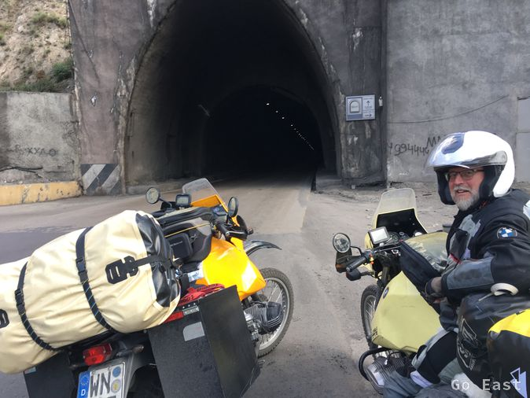


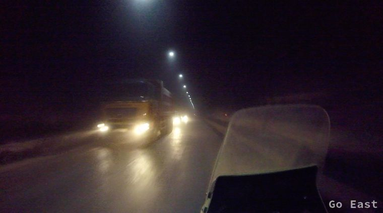

Es geht bergab, Leute winken uns zu und viele Frauen sitzen am Wegesrand und verkaufen Obst. 80km vor Duschanbe knacken wir unsere 10.000km Marke.
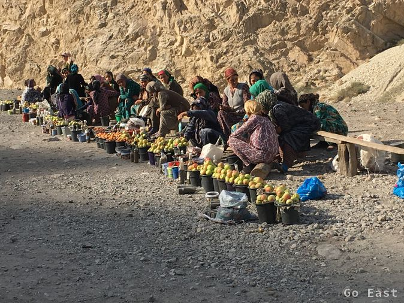
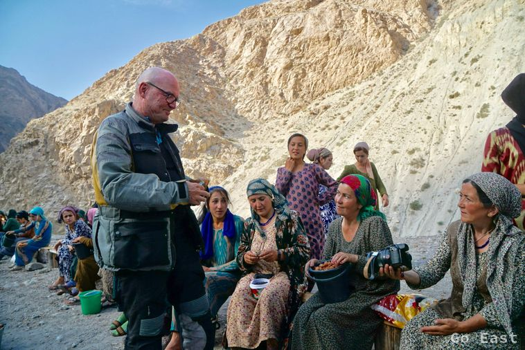
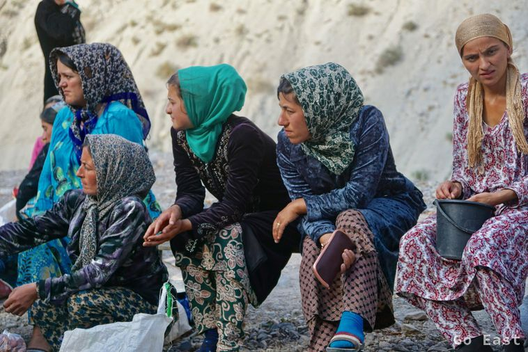
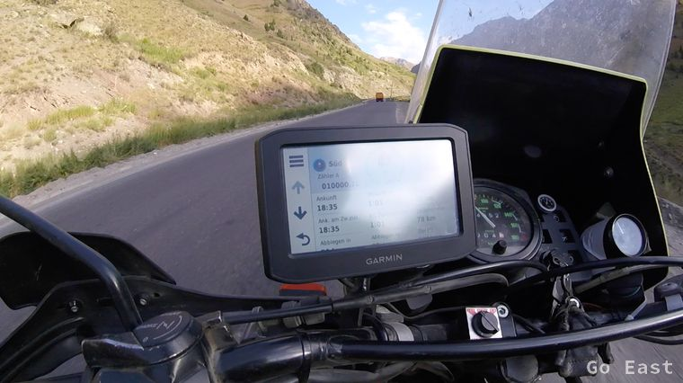
Wir steuern das City Hostel in Duschanbe an, das wir schließlich auch finden, um dort auch aktuelle Info über den aktuellen Streckenverlauf zu erfahren. Das scheint ein bessere Ort bzgl. Infoerhalt zu sein als ein Sterne-Hotel. Das Zimmer, das wir erhalten ist spartanisch und macht mich nicht wirklich happy, zumal es auch nur ein Gemeinschaftsbad gibt. Auch Klimaanlage ist Fehlanzeige.
Kurze Zeit später trifft ein Pulk Autos der Mongol-Rally ein, mit internationalen Teilnehmern aus Schweden, England, Deutschland und Neuseeland ein. Durchwegs junge Leute in gemischte Teams. Es ergeben sich sehr interessante Gespräche. Den Abend beschließen wir in einem nahegelegenen Restaurant mit sehr gutem tadchikischem Fassbier und Schaschlik.
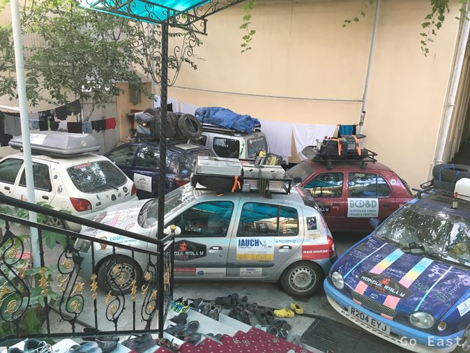
City Hostel in Duschanbe
City Hostel in Duschanbe
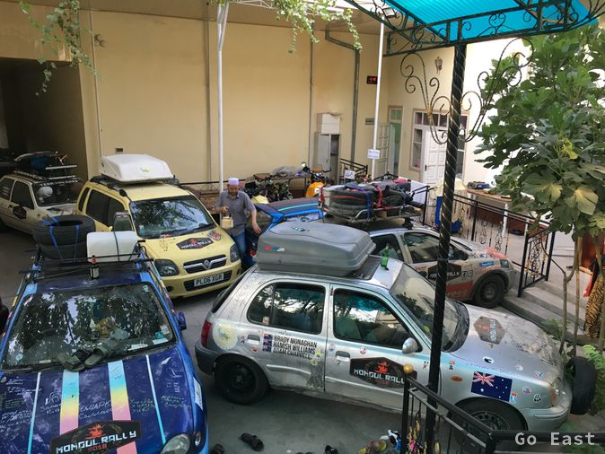
City Hostel in Duschanbe